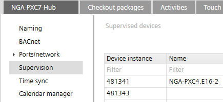
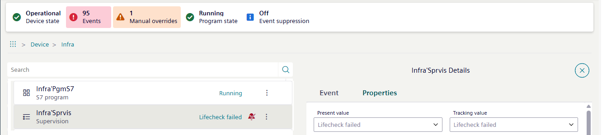

Checking life-check
A life-check device is a dedicated PXC5/7 device that checks the reachability of other BACnet devices and generates an alarm if assigned devices cannot be reached.
The devices to be supervised by the PXC5/7 device must be added to the life check list. The table contains the device instance number for PXC4-2/5/7 and DXR devices. Only the device instance number is available for third-party devices.
- Recommended number of devices for life check: Max. 250 (on the same IP segment and/or in the MS/TP subnet connected to this PXC5/7 device)
- Life-check time interval: 5 minutes

- The life-check is configured in ABT Site. All devices to be checked are linked to the device instance for the
 supervision device.
supervision device.
- Go to the Object view tab.
- Select Device.
- Select Infrastructure > Supervision.
- Select .
- The Sprvis properties dialog area opens.
- Checking the Present value and Tracking value information.

Error handling
If a BACnet life-check failure is reported, there are several things you should check to identify and resolve the issue:
- Device Communication:
- Verify that the BACnet device reporting the life-check failure is able to communicate properly on the network.
- Check the physical network connections, wiring, and terminations to ensure there are no communication issues.
- Device configuration:
- Ensure that the BACnet device is properly configured and its life-check monitoring functionality is enabled and configured correctly.
- Review the devices settings, such as the life-check interval, expected response time, and any related parameters.
- Device operational status:
- Determine the current operational status of the BACnet device reporting the life-check failure.
- Check for any error messages, fault conditions, or other indications of issues with the hardware or software of the device.
- Network topology:
- Examine the network topology to identify any potential issues that could be causing the life-check failure, such as network congestion, routing problems, or device isolation.
- Ensure that the device is properly connected and integrated within the BACnet network.
- Network traffic:
- Monitor the network traffic to identify any unusual patterns or bottlenecks that could be contributing to the life-check failure.
- Look for excessive network traffic, packet loss, or delays that may be impacting the timely delivery of the life-check messages.
- Backup power and redundancy:
- Verify that the BACnet device reporting the life-check failure has adequate backup power and redundancy measures in place.
- Ensure that the device can maintain its life-check monitoring functionality even in the event of a power outage or other disruptions.
- Software and firmware updates:
- Check if there are any available software or firmware updates for the BACnet device that could address the life-check failure.
- Apply any necessary updates to ensure the device is running the latest and most stable version of its software.